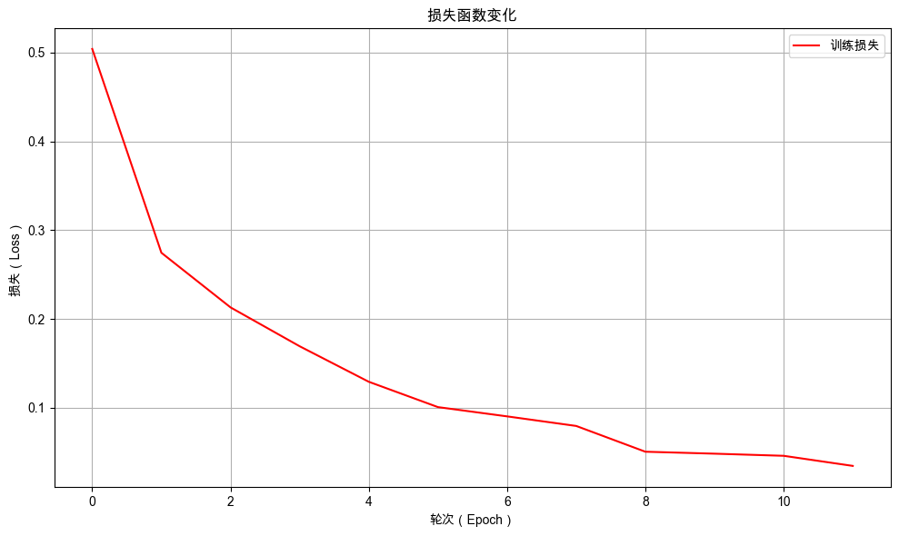

9. 记忆的进化：GRU与长期依赖问题#
通过本次任务，你将学会如何使用 GRU 提高情感分析模型的能力。
9.1. 任务背景#
深夜的办公室，奶茶店后台系统的用户评价仍如潮水般涌入，每一条都承载着市场的真实声音。然而，最新一轮模型评估的结果却令人皱眉——分类效果依旧不尽如人意。市场不会等待，竞品迭代日新月异，若不能从评价中快速识别关键反馈，产品优化便如盲人摸象，难以切中需求。时间，正成为我们最昂贵的成本。
想象一下，如果我们的记忆不分轻重，把所有信息都牢牢记住，会是什么样子？早上通勤时看到的广告牌、昨天会议的每一句对话、上周读过的书中每一个字……这样的记忆不仅负担沉重，还会让我们难以抓住真正重要的信息。
传统循环神经网络（RNN）就面临着类似的困境。它虽然拥有了“记忆”能力，能够处理序列数据，但却是一种“平等式记忆”——所有信息都以相同程度被保留和传递。眼下它就陷入了这种困境：它太想记住所有信息了。就像一个过分认真的记录者，不放过每一个词语——无论是转折的“但”、含糊的“好像”，还是琐碎的“那天”，它都一视同仁地存入记忆。结果，真正决定体验的关键反馈，如“珍珠偏硬”、“甜度过高”、“服务很贴心”，反而被淹没在无关细节的噪声中。
若能赋予模型人类般的”选择性遗忘”能力：让它自主决定”何时专注新信息，何时过滤干扰，何时融合历史记忆”，便能从纷杂评价中精准提取决定产品成败的黄金线索。
那么，我们该如何着手，为模型赋予这种“选择性记忆”的智慧呢？
9.2. 最少必要知识#
梯度消失和梯度爆炸
门控 RNN
多层 RNN
9.3. 任务鸟瞰#
9.3.1. 任务分析#
本次的任务是使用 GRU 代替基础 RNN 来优化情感分析模型，提高模型的性能。

由于 RNN 反向传播时，梯度会流经 tanh和 MatMul（矩阵乘积）会导致梯度消失和梯度爆炸，对于长序列文本的处理能力有限。

为了解决在 RNN 的学习中梯度消失的问题，需要从根本上改变 RNN 层的结构，需要引入门机制和记忆单元。其，最具代表性的就是 LSTM 和 GRU，它们都通过引入门控机制来控制信息流的流向，并且改变了 RNNCell 中的隐藏状态的计算方式，使得模型在处理长序列时更稳定。
LSTM 计算图如下：

GRU 层计算图如下：

在 LSTM 和 GRU 的反向传播仅流过“+”和“×”节点。
LSTM 反向传播示意图：

GRU 反向传播示意图：

“+”节点将上游传来的梯度原样流出，梯度没有变化（退化）。而“×”节点的计算并不是矩阵乘积，而是对应元素的乘积（阿达玛积）。这就是它们不会发生梯度消失（或梯度爆炸）的原因。
这里我们不再深入探讨 LSTM 和 GRU 的具体实现细节，而主要从层视图和计算单元视图的角度，简要对比它们与传统 RNN 的异同。
9.3.2. 模型结构#
在神经网络模型中，我们通常采用模块化设计，将网络构建为一系列层的堆叠。基于这种层状架构，我们可以像拼接乐高积木一样灵活组合不同模块，也能够方便地使用功能相似的层进行替换。得益于神经网络模型的模块化设计理念，我们可以轻松地使用 LSTM 和 GRU 层替换掉 RNN 层。
RNN、LSTM和GRU输入输出的对比：

在一般的情况下，我们通常首选门控循环单元（GRU）。相较于长短期记忆网络（LSTM），GRU实现了结构的简化，使其在保持与 LSTM 相近性能的同时，具备了显著的高效性，因此在计算资源有限、需要更快训练速度，或数据量不是很大的场景中，GRU 通常是更优的选择。
接下来，我们将采用 GRU 来优化情感分析模型。模型结构如下：

下面我们进入实战部分，依然沿用 NLP 任务的通用开发流程组织本章内容：定义分词器、数据准备、模型定义、模型训练与模型评估。其中的重复代码不再进行赘述。
我们先配置好环境，避免因为环境不同而导致程序不能复现。
9.4. 环境配置#
9.4.1. 安装依赖#
!pip install --upgrade dsxllm
9.4.2. 环境版本#
from dsxllm.util import show_version
show_version()
/Users/kong/opt/anaconda3/envs/dsx-ai/lib/python3.12/site-packages/tqdm/auto.py:21: TqdmWarning: IProgress not found. Please update jupyter and ipywidgets. See https://ipywidgets.readthedocs.io/en/stable/user_install.html
from .autonotebook import tqdm as notebook_tqdm
本书愿景：
+------+--------------------------------------------------------+
| Info | 《动手学大语言模型》 |
+------+--------------------------------------------------------+
| 作者 | 吾辈亦有感 |
| 哔站 | https://space.bilibili.com/3546632320715420 |
| 定位 | 基于'从零构建'的理念，用实战帮助程序员快速入门大模型。 |
| 愿景 | 若让你的AI学习之路走的更容易一点，我将倍感荣幸！祝好😄 |
+------+--------------------------------------------------------+
环境信息：
+-------------+--------------+------------------------+
| Python 版本 | PyTorch 版本 | PyTorch Lightning 版本 |
+-------------+--------------+------------------------+
| 3.12.12 | 2.10.0 | 2.6.1 |
+-------------+--------------+------------------------+
9.5. 自定义分词器#
此部分代码和前面章节一致。
class SimpleTokenizer:
def __init__(self, pad_at_beginning=False):
"""
初始化简单分词器
"""
# 特殊token
self.pad_token = '[PAD]'
self.unk_token = '[UNK]'
self.pad_at_beginning = pad_at_beginning
# 特殊token ID
self.pad_token_id = 0
self.unk_token_id = 1
# 构建词汇表
self.vocab = {
self.pad_token: self.pad_token_id,
self.unk_token: self.unk_token_id,
}
# 反向词汇表 (id -> token)
self.ids_to_tokens = {v: k for k, v in self.vocab.items()}
# 词汇表大小
self.vocab_size = len(self.ids_to_tokens)
def build_vocab(self, texts):
"""
根据文本构建词汇表
"""
for text in texts:
words = list(text) # 将每个汉字作为独立token
for word in words:
if word not in self.vocab:
self.vocab[word] = self.vocab_size
self.ids_to_tokens[self.vocab_size] = word
self.vocab_size += 1
def build_vocab_from_file(self, file_path):
"""
从文件中构建词汇表
"""
texts = []
with open(file_path, 'r', encoding='utf-8') as f:
for line in f:
texts.append(line.strip())
self.build_vocab(texts)
def encode(self, text):
"""
将文本编码为token ids
"""
tokens = list(text)
# 转换为IDs
token_ids = []
for token in tokens:
if token in self.vocab:
token_ids.append(self.vocab[token])
else:
token_ids.append(self.unk_token_id)
return token_ids
def decode(self, token_ids):
"""
将token ids解码为文本
"""
tokens = []
for token_id in token_ids:
if token_id in self.ids_to_tokens:
token = self.ids_to_tokens[token_id]
# 过滤特殊token（可根据需要调整）
if token not in [self.pad_token]:
tokens.append(token)
return ''.join(tokens)
def pad_sequences(self, sequences, max_length, pad_at_beginning=False):
"""
对序列进行填充或截断
Args:
sequences: 序列列表
max_length: 最大长度
pad_at_beginning: 是否在序列开头填充，默认为False（在末尾填充）
"""
padded_sequences = []
for seq in sequences:
if len(seq) > max_length:
# 截断
if pad_at_beginning:
# 从开头截断
padded_seq = seq[len(seq) - max_length:]
else:
# 从末尾截断
padded_seq = seq[:max_length]
else:
# 填充
pad_length = max_length - len(seq)
padding = [self.pad_token_id] * pad_length
if pad_at_beginning:
# 在开头填充
padded_seq = padding + seq
else:
# 在末尾填充
padded_seq = seq + padding
padded_sequences.append(padded_seq)
return padded_sequences
def __call__(self, texts, max_length=128):
"""
分词器主调用函数
"""
is_single_text = False
if isinstance(texts, str):
is_single_text = True
texts = [texts]
# 编码所有文本
all_token_ids = []
for text in texts:
token_ids = self.encode(text)
all_token_ids.append(token_ids)
# 填充或截断到统一长度
padded_token_ids = self.pad_sequences(all_token_ids, max_length, self.pad_at_beginning)
if is_single_text:
padded_token_ids = padded_token_ids[0]
return padded_token_ids
9.6. 准备数据#
9.6.1. 数据集下载#
9.6.2. 数据转换器#
将文本转换为 token ids 的转换器。
import torch
import torch.nn.functional as F
class TextTransform:
def __init__(self, tokenizer, max_length=20, vocab_size=None):
self.tokenizer = tokenizer
self.max_length = max_length
self.vocab_size = vocab_size or tokenizer.vocab_size
def __call__(self, text):
# 使用 tokenizer 对文本进行编码，并自动完成截断与填充
input_ids = self.tokenizer(
text,
max_length=self.max_length, # 最大序列长度
)
# 如果 input_ids 不是 tensor，则转换为 tensor
if not isinstance(input_ids, torch.Tensor):
input_ids = torch.tensor(input_ids, dtype=torch.long)
return input_ids
9.6.3. 自定义数据集#
import torch
from torch.utils.data import Dataset
class TextClassificationDataset(Dataset):
def __init__(self, texts, labels, transform):
self.texts = texts
self.labels = labels
self.transform = transform
def __len__(self):
return len(self.texts)
def __getitem__(self, idx):
text = self.texts[idx]
label = self.labels[idx]
input_ids = self.transform(text)
return {
"input_ids": input_ids,
"labels": torch.tensor(label, dtype=torch.long)
}
@classmethod
def from_file(cls, file_path, transform):
"""
从txt文件加载数据集
txt格式应包含标签和文本，使用制表符分隔
"""
texts = []
labels = []
# 读取txt文件
with open(file_path, 'r', encoding='utf-8') as f:
for line in f:
line = line.strip()
if line:
# 使用制表符分割
parts = line.split('\t')
if len(parts) >= 2:
label = int(parts[0]) # 第一列是标签
text = '\t'.join(parts[1:]) # 剩余部分是文本（处理文本中可能包含制表符的情况）
texts.append(text)
labels.append(label)
# 创建数据集实例
return cls(texts, labels, transform)
9.6.4. 自定义数据模组#
import lightning as L
from torch.utils.data import DataLoader
class TextDataModule(L.LightningDataModule):
def __init__(self, batch_size, transform, train_data_file, val_data_file="", test_data_file=""):
super().__init__()
# 训练、验证和测试数据文件路径
self.train_data_file = train_data_file # 训练数据文件路径
self.val_data_file = val_data_file # 验证数据文件路径（可选）
self.test_data_file = test_data_file # 测试数据文件路径（可选）
# 数据集实例，初始为None，在setup方法中初始化
self.test_dataset = None # 测试数据集
self.val_dataset = None # 验证数据集
self.train_dataset = None # 训练数据集
# 批次大小和数据转换器
self.batch_size = batch_size # 每个批次的样本数量
self.transform = transform # 数据转换器，用于预处理数据
def prepare_data(self):
# 下载或准备数据集的操作（如果需要）
# 此方法通常用于下载数据或进行一次性操作
pass
def setup(self, stage=None):
# 根据阶段加载数据集
# 加载训练数据集
self.train_dataset = TextClassificationDataset.from_file(self.train_data_file, transform=self.transform)
# 如果未提供验证数据文件，则使用训练数据集作为验证集
if self.val_data_file == "":
self.val_dataset = self.train_dataset
else:
# 否则加载指定的验证数据集
self.val_dataset = TextClassificationDataset.from_file(self.val_data_file, transform=self.transform)
# 如果未提供测试数据文件，则使用验证数据集作为测试集
if self.test_data_file == "":
self.test_dataset = self.val_dataset
else:
# 否则加载指定的测试数据集
self.test_dataset = TextClassificationDataset.from_file(self.test_data_file, transform=self.transform)
def train_dataloader(self):
# 返回训练数据的DataLoader，启用shuffle以打乱数据顺序
return DataLoader(self.train_dataset, batch_size=self.batch_size, shuffle=True)
def val_dataloader(self):
# 返回验证数据的DataLoader，不打乱数据顺序
return DataLoader(self.val_dataset, batch_size=self.batch_size)
def test_dataloader(self):
# 返回测试数据的DataLoader，不打乱数据顺序
return DataLoader(self.test_dataset, batch_size=self.batch_size)
9.7. 改进情感分析模型#
本项目使用 GRU 替换之前的 RNN 模型。从下图中可以看到，RNN 层和 GRU 层的输入和输出都是一样的，因此可以方便地进行替换，几乎不用修改代码。
主要改动有以下几点：
在
__init__()中使用nn.GRU替换自定义的RNN层；在
forward()中使用gru层处理序列数据；
gru 前向计算时会返回两个值，第一个是每个时间步的输出结果 gru_output，第二个是最后一个时间步的隐藏状态 gru_hidden。
gru_hidden 是最终的隐藏状态，通常用于分类任务或作为后续层的输入。形状：(num_layers * num_directions, batch_size, hidden_size)。
num_layers：GRU 的层数。
num_directions：方向数（单向为 1，双向为 2）。
batch_size：批次大小。
hidden_size：GRU 隐藏层的维度。
本项目使用的是默认的配置，即 num_layers=1 和 batch_first=False，即单层单向的 GRU 层。双向化和多层化是提高 GRU 层效果的常用技巧。
多个 GRU 层堆叠示意图：

使用多个 GRU 层处理文本的过程如下：

所以最后一层的最后一个隐藏状态 gru_hidden[-1] 即为文本序列最终的隐藏状态，用它作为输出层的输入即可。具体过程如下图所示：

9.7.1. 基于 GRU 的情感分析模型的代码实现#
import torch
import lightning as L
from torch import nn
import torch.nn.functional as F
class TextClassifier(L.LightningModule):
def __init__(self, vocab_size=10, hidden_size=128, num_classes=2, learning_rate=0.01, dropout_p=0.1):
super(TextClassifier, self).__init__()
self.learning_rate = learning_rate
# 定义网络层
# 嵌入层：将词索引映射到高维向量
self.embedding_layer = nn.Embedding(num_embeddings=vocab_size, embedding_dim=hidden_size)
# 🌟改进点🌟 GRU层：用于处理序列数据
self.gru = nn.GRU(input_size=hidden_size, hidden_size=hidden_size, batch_first=True)
# Dropout层：防止过拟合
self.dropout = nn.Dropout(dropout_p)
self.output_layer = nn.Linear(in_features=hidden_size, out_features=num_classes)
# 存储每个训练步骤和训练循环的损失
self.train_step_losses = []
self.train_epoch_losses = []
# 用于存储验证步骤的结果
self.validation_step_outputs = []
self.eval_accuracies = []
# 示例输入
self.example_input_array = torch.randint(0, vocab_size, (32, 30), dtype=torch.long)
# 标签id到标签的映射，用于预测解码
self.label_map = None
def forward(self, input_ids):
"""前向传播"""
token_embeds = self.dropout(self.embedding_layer(input_ids)) # 嵌入并应用dropout
"""
🌟改进点🌟 通过GRU处理, 得到输出和隐藏状态
- gru_output 是 GRU 层在每个时间步的输出结果。形状为(batch_size, sequence_length, hidden_size)
- batch_size：批次大小。
- sequence_length：输入序列的长度。
- hidden_size：GRU 隐藏层的维度。
- gru_hidden 是 GRU 层最后一个时间步的隐藏状态。形状：(num_layers * num_directions, batch_size, hidden_size)。
- num_layers：GRU 的层数。
- num_directions：方向数（单向为 1，双向为 2）。
- batch_size：批次大小。
- hidden_size：GRU 隐藏层的维度。
gru_hidden 是最终的隐藏状态，通常用于分类任务或作为后续层的输入。
"""
gru_output, gru_hidden = self.gru(token_embeds)
# 取出最后一层的隐藏状态（对于单层GRU，索引为-1或0都可以）
last_hidden = gru_hidden[-1] # 形状: (batch_size, hidden_size)
# 将最后一个时间步的特征输入到输出层
out = self.output_layer(last_hidden) # 形状: (batch_size, num_classes)
return out
def training_step(self, batch, batch_idx):
"""训练步骤"""
input_ids = batch["input_ids"]
labels = batch["labels"]
# 前向传播
outputs = self(input_ids)
loss = F.cross_entropy(outputs, labels)
# 计算准确率
preds = torch.argmax(outputs, dim=1)
acc = (preds == labels).float().mean()
# 记录日志
self.log('train_loss', loss)
self.log('train_acc', acc)
# 存储损失以便后续使用
self.train_step_losses.append(loss.detach())
return loss
def on_train_epoch_end(self):
"""在每个训练epoch结束时计算整体损失"""
if self.train_step_losses: # 确保列表不为空
# 计算并记录平均训练损失
avg_train_loss = torch.stack(self.train_step_losses).mean()
self.train_epoch_losses.append({
"epoch": self.current_epoch,
"loss": avg_train_loss.item() # 转换为 Python 数值
})
# 清空列表为下一个 epoch 做准备
self.train_step_losses.clear()
def validation_step(self, batch, batch_idx):
"""验证步骤"""
input_ids = batch["input_ids"]
target_ids = batch["labels"]
# 前向传播
outputs = self(input_ids)
# 计算准确率
preds = torch.argmax(outputs, dim=1)
# 保存结果供epoch结束时使用
self.validation_step_outputs.append({'preds': preds, 'labels': target_ids})
def on_validation_epoch_end(self):
"""在每个验证epoch结束时计算整体准确率"""
# 汇总所有预测结果和标签
all_preds = torch.cat([x['preds'] for x in self.validation_step_outputs])
all_labels = torch.cat([x['labels'] for x in self.validation_step_outputs])
# 计算整体准确率
val_overall_acc = (all_preds == all_labels).float().mean()
# 记录整体准确率
self.log('total_samples', len(all_labels))
self.log('total_correct', (all_preds == all_labels).float().sum())
self.log('val_overall_acc', val_overall_acc)
# 将评估结果保存到 eval_accuracies 列表中
self.eval_accuracies.append({
"epoch": self.current_epoch, # epoch编号
"总样本数": len(all_labels), # 验证集总样本数
"正确样本数": int((all_preds == all_labels).float().sum().item()), # 预测正确的样本数
"准确率": round(val_overall_acc.item(), 4) # 准确率
})
# 清空缓存
self.validation_step_outputs.clear()
def clear_cache(self):
"""清除缓存"""
self.train_step_losses.clear()
self.train_epoch_losses.clear()
self.validation_step_outputs.clear()
self.eval_accuracies.clear()
def configure_optimizers(self):
"""配置优化器"""
optimizer = torch.optim.Adam(self.parameters(), lr=self.learning_rate)
return optimizer
def setup_label_map(self, label_map=None):
"""根据数据集设置标签映射"""
self.label_map = label_map
def predict(self, input_ids):
"""
对新数据进行预测
Args:
input_ids: 输入特征，可以是单个样本或批量样本
Returns:
predictions: 预测的标签索引
decoded_predictions: 解码后的标签名称
probabilities: 预测概率
"""
# 确保模型处于评估模式
self.eval()
# 【新增】判断输入类型并处理
if isinstance(input_ids, list):
input_ids = torch.stack(input_ids) # 转换为张量
# 确保输入是tensor格式
if not isinstance(input_ids, torch.Tensor):
input_ids = torch.tensor(input_ids, dtype=torch.float32)
# 预测
with torch.no_grad():
outputs = self(input_ids)
predictions = torch.argmax(outputs, dim=1).tolist()
probabilities = torch.softmax(outputs, dim=1).tolist()
# 解码预测结果
decoded_predictions = [self.label_map[pred] for pred in predictions]
return predictions, decoded_predictions, probabilities
def decode_labels(self, label_ids):
"""
将标签ID解码为标签名称
Args:
label_ids: 标签ID列表
Returns:
decoded_labels: 解码后的标签名称列表
"""
if isinstance(label_ids, torch.Tensor):
label_ids = label_ids.tolist()
return [self.label_map[label_id] for label_id in label_ids]
9.7.2. 基于 GRU 的情感分析模型的详细信息#
from lightning.pytorch.utilities.model_summary import ModelSummary
# 初始化分词器，并从训练数据文件中构建词汇表
tokenizer = SimpleTokenizer()
tokenizer.build_vocab_from_file("./dataset/comments_train.txt")
# 创建基于 GRU 的文本分类模型实例
model = TextClassifier(vocab_size=tokenizer.vocab_size, hidden_size=128, num_classes=2,
learning_rate=0.001)
# 使用 ModelSummary 工具生成模型的详细摘要信息
summary = ModelSummary(model, max_depth=-1)
# 打印模型摘要信息，包括各层的参数量、输入输出形状等
print(summary)
| Name | Type | Params | Mode | FLOPs | In sizes | Out sizes
---------------------------------------------------------------------------------------------------------------
0 | embedding_layer | Embedding | 220 K | train | 0 | [32, 30] | [32, 30, 128]
1 | gru | GRU | 99.1 K | train | 188 M | [32, 30, 128] | [[32, 30, 128], [1, 32, 128]]
2 | dropout | Dropout | 0 | train | 0 | [32, 30, 128] | [32, 30, 128]
3 | output_layer | Linear | 258 | train | 16.4 K | [32, 128] | [32, 2]
---------------------------------------------------------------------------------------------------------------
320 K Trainable params
0 Non-trainable params
320 K Total params
1.281 Total estimated model params size (MB)
4 Modules in train mode
0 Modules in eval mode
188 M Total Flops
从模型摘要信息中，可以看到 gru 层的输出形状为 [[32, 30, 128], [1, 32, 128]]，两个部分分别对应着 gru_output 和 gru_hidden。
gru_output：gru 层输出的形状为[batch_size, seq_len, hidden_size]，即对 32 个样本的 30 个 Token 都生成一个 128 维的隐藏状态向量。gru_hidden：gru 层隐藏状态的形状为[num_layers * num_directions, batch_size, hidden_size]，即对 32 个样本分别生成一个 128 维的表示整段文本的语义的隐藏状态向量。
9.8. 模型的训练与评估#
9.8.1. 初始化模型和训练器#
# 超参配置
max_length = 30
batch_size = 32
# 1️⃣ 创建分词器，从训练数据文件中构建词汇表
tokenizer = SimpleTokenizer(pad_at_beginning=True)
tokenizer.build_vocab_from_file("./dataset/comments_train.txt")
# 2️⃣ 创建数据转换器
transform = TextTransform(tokenizer, max_length=max_length)
# 3️⃣ 创建 DataModule 实例
datamodule = TextDataModule(batch_size=batch_size, transform=transform, train_data_file="./dataset/comments_train.txt")
# 4️⃣ 创建 TextClassifier 实例
model = TextClassifier(vocab_size=tokenizer.vocab_size, hidden_size=128, num_classes=2, learning_rate=0.001)
# 5️⃣ 创建 Trainer 实例
# - max_epochs=12: 最大训练轮数为12
# - log_every_n_steps=3: 每3个步骤记录一次日志
# - check_val_every_n_epoch=1: 每1个epoch进行一次验证
# - enable_progress_bar=False: 不显示进度条
trainer = L.Trainer(max_epochs=12, log_every_n_steps=3, check_val_every_n_epoch=1, num_sanity_val_steps=0,
enable_progress_bar=False)
GPU available: True (mps), used: True
TPU available: False, using: 0 TPU cores
💡 Tip: For seamless cloud logging and experiment tracking, try installing [litlogger](https://pypi.org/project/litlogger/) to enable LitLogger, which logs metrics and artifacts automatically to the Lightning Experiments platform.
9.8.2. 训练前评估#
训练前评估为模型性能建立初始基准。
# 直接调用验证函数进行评估
trainer.validate(model=model, datamodule=datamodule)
💡 Tip: For seamless cloud uploads and versioning, try installing [litmodels](https://pypi.org/project/litmodels/) to enable LitModelCheckpoint, which syncs automatically with the Lightning model registry.
/Users/kong/opt/anaconda3/envs/dsx-ai/lib/python3.12/site-packages/lightning/pytorch/utilities/_pytree.py:21: `isinstance(treespec, LeafSpec)` is deprecated, use `isinstance(treespec, TreeSpec) and treespec.is_leaf()` instead.
┏━━━━━━━━━━━━━━━━━━━━━━━━━━━┳━━━━━━━━━━━━━━━━━━━━━━━━━━━┓ ┃ Validate metric ┃ DataLoader 0 ┃ ┡━━━━━━━━━━━━━━━━━━━━━━━━━━━╇━━━━━━━━━━━━━━━━━━━━━━━━━━━┩ │ total_correct │ 1323.0 │ │ total_samples │ 2728.0 │ │ val_overall_acc │ 0.48497068881988525 │ └───────────────────────────┴───────────────────────────┘
[{'total_samples': 2728.0,
'total_correct': 1323.0,
'val_overall_acc': 0.48497068881988525}]
模型训练前模型的准确率为 48.49%，模型不能区分顾客评价中的情感倾向。
9.8.3. 训练模型#
调用 trainer.fit() 训练 12 个轮次。
model.clear_cache()
trainer.fit(model=model, datamodule=datamodule)
┏━━━┳━━━━━━━━━━━━━━━━━┳━━━━━━━━━━━┳━━━━━━━━┳━━━━━━━┳━━━━━━━━┳━━━━━━━━━━━━━━━┳━━━━━━━━━━━━━━━━━━━━━━━━━━━━━━━┓ ┃ ┃ Name ┃ Type ┃ Params ┃ Mode ┃ FLOPs ┃ In sizes ┃ Out sizes ┃ ┡━━━╇━━━━━━━━━━━━━━━━━╇━━━━━━━━━━━╇━━━━━━━━╇━━━━━━━╇━━━━━━━━╇━━━━━━━━━━━━━━━╇━━━━━━━━━━━━━━━━━━━━━━━━━━━━━━━┩ │ 0 │ embedding_layer │ Embedding │ 220 K │ train │ 0 │ [32, 30] │ [32, 30, 128] │ │ 1 │ gru │ GRU │ 99.1 K │ train │ 188 M │ [32, 30, 128] │ [[32, 30, 128], [1, 32, 128]] │ │ 2 │ dropout │ Dropout │ 0 │ train │ 0 │ [32, 30, 128] │ [32, 30, 128] │ │ 3 │ output_layer │ Linear │ 258 │ train │ 16.4 K │ [32, 128] │ [32, 2] │ └───┴─────────────────┴───────────┴────────┴───────┴────────┴───────────────┴───────────────────────────────┘
Trainable params: 320 K Non-trainable params: 0 Total params: 320 K Total estimated model params size (MB): 1 Modules in train mode: 4 Modules in eval mode: 0 Total FLOPs: 188 M
`Trainer.fit` stopped: `max_epochs=12` reached.
9.8.3.1. 训练过程可视化#
绘制训练过程中损失值的变化曲线。
from dsxllm.util import plot_loss_curves
plot_loss_curves(model.train_epoch_losses)

9.8.3.2. 查看模型评估记录#
查看训练过程中的评估结果，观察模型在验证集上的表现。
from dsxllm.util import to_dataframe
to_dataframe(model.eval_accuracies)
| epoch | 总样本数 | 正确样本数 | 准确率 | |
|---|---|---|---|---|
| 0 | 0 | 2728 | 2431 | 0.8911 |
| 1 | 1 | 2728 | 2542 | 0.9318 |
| 2 | 2 | 2728 | 2590 | 0.9494 |
| 3 | 3 | 2728 | 2644 | 0.9692 |
| 4 | 4 | 2728 | 2662 | 0.9758 |
| 5 | 5 | 2728 | 2684 | 0.9839 |
| 6 | 6 | 2728 | 2686 | 0.9846 |
| 7 | 7 | 2728 | 2695 | 0.9879 |
| 8 | 8 | 2728 | 2706 | 0.9919 |
| 9 | 9 | 2728 | 2710 | 0.9934 |
| 10 | 10 | 2728 | 2719 | 0.9967 |
| 11 | 11 | 2728 | 2721 | 0.9974 |
9.8.4. 训练后评估#
# 直接调用验证函数进行评估
trainer.validate(model=model, datamodule=datamodule)
/Users/kong/opt/anaconda3/envs/dsx-ai/lib/python3.12/site-packages/lightning/pytorch/utilities/_pytree.py:21: `isinstance(treespec, LeafSpec)` is deprecated, use `isinstance(treespec, TreeSpec) and treespec.is_leaf()` instead.
┏━━━━━━━━━━━━━━━━━━━━━━━━━━━┳━━━━━━━━━━━━━━━━━━━━━━━━━━━┓ ┃ Validate metric ┃ DataLoader 0 ┃ ┡━━━━━━━━━━━━━━━━━━━━━━━━━━━╇━━━━━━━━━━━━━━━━━━━━━━━━━━━┩ │ total_correct │ 2721.0 │ │ total_samples │ 2728.0 │ │ val_overall_acc │ 0.9974340200424194 │ └───────────────────────────┴───────────────────────────┘
[{'total_samples': 2728.0,
'total_correct': 2721.0,
'val_overall_acc': 0.9974340200424194}]
模型经过训练后，预测准确率从 48.49% 提升至 99.74%。相比之前有显著提升，说明使用 GRU 模型在处理长文本数据时表现非常优秀。
9.9. 使用模型进行预测#
针对一组包含不同长度（短、中、长）且情感倾向明确的顾客评论进行推理预测，直观观察模型的预测效果。
model.setup_label_map(label_map={0: "负面", 1: "正面"})
from dsxllm.util import print_classification_predictions
# 1. 准备需要预测的文本（长短不一）
new_texts = [
# 短文本
"非常好",
"质量差",
"推荐购买",
"不建议买",
# 中等长度文本
"这个产品还不错",
"物流速度太慢了",
"性价比很高值得推荐",
# 长文本
"包装很精美，产品和描述一致，非常满意这次购物体验",
"卖家服务态度不好，发货速度慢，产品质量也不如预期",
"虽然价格有点贵，但是品质确实不错，使用效果很满意"
]
true_labels = [1, 0, 1, 0, 1, 0, 1, 1, 0, 1]
# 2. 使用与训练时统一的 transform 方法对文本进行处理
input_ids = []
for text in new_texts:
# 使用训练时相同的 transform 方法
transformed = transform(text)
input_ids.append(transformed)
# 3. 使用模型进行预测
predictions, decoded_predictions, probabilities = model.predict(input_ids)
# 4. 输出预测结果
print_classification_predictions(new_texts, true_labels, predictions, probabilities, model.label_map)
🎯 分类预测结果 (准确率: 10/10 = 100.00%)：
+--------------------------------------------------+----------+----------+----------+------+
| 输入 | 真实标签 | 预测标签 | 最高概率 | 标记 |
+--------------------------------------------------+----------+----------+----------+------+
| 非常好 | 正面 | 正面 | 0.9992 | ☑ |
| 质量差 | 负面 | 负面 | 0.9990 | ☑ |
| 推荐购买 | 正面 | 正面 | 0.7792 | ☑ |
| 不建议买 | 负面 | 负面 | 0.9986 | ☑ |
| 这个产品还不错 | 正面 | 正面 | 0.9908 | ☑ |
| 物流速度太慢了 | 负面 | 负面 | 0.9988 | ☑ |
| 性价比很高值得推荐 | 正面 | 正面 | 0.9971 | ☑ |
| 包装很精美，产品和描述一致，非常满意这次购物体验 | 正面 | 正面 | 0.9993 | ☑ |
| 卖家服务态度不好，发货速度慢，产品质量也不如预期 | 负面 | 负面 | 0.9998 | ☑ |
| 虽然价格有点贵，但是品质确实不错，使用效果很满意 | 正面 | 正面 | 0.9761 | ☑ |
+--------------------------------------------------+----------+----------+----------+------+
这次模型的预测非常完美，准确率达到 100%。咱们的情感分析模型终于训练成功了！
9.10. 泛化能力评估#
from dsxllm.util import print_red
datamodule2 = TextDataModule(batch_size=batch_size, transform=transform,
train_data_file="./dataset/comments_train.txt",
val_data_file="./dataset/comments_val.txt")
print_red("在训练集上评估：")
trainer.validate(model=model, datamodule=datamodule)
print_red("在测试集上评估：")
trainer.validate(model=model, datamodule=datamodule2)
在训练集上评估：
┏━━━━━━━━━━━━━━━━━━━━━━━━━━━┳━━━━━━━━━━━━━━━━━━━━━━━━━━━┓ ┃ Validate metric ┃ DataLoader 0 ┃ ┡━━━━━━━━━━━━━━━━━━━━━━━━━━━╇━━━━━━━━━━━━━━━━━━━━━━━━━━━┩ │ total_correct │ 2721.0 │ │ total_samples │ 2728.0 │ │ val_overall_acc │ 0.9974340200424194 │ └───────────────────────────┴───────────────────────────┘
在测试集上评估：
┏━━━━━━━━━━━━━━━━━━━━━━━━━━━┳━━━━━━━━━━━━━━━━━━━━━━━━━━━┓ ┃ Validate metric ┃ DataLoader 0 ┃ ┡━━━━━━━━━━━━━━━━━━━━━━━━━━━╇━━━━━━━━━━━━━━━━━━━━━━━━━━━┩ │ total_correct │ 2504.0 │ │ total_samples │ 2789.0 │ │ val_overall_acc │ 0.8978128433227539 │ └───────────────────────────┴───────────────────────────┘
[{'total_samples': 2789.0,
'total_correct': 2504.0,
'val_overall_acc': 0.8978128433227539}]
模型在评估集上的准确率达到了 89.78%，虽然存在一定的过拟合现象，但模型的泛化能力依然不错，也意味着本阶段情感分类模型的迭代工作圆满完成。
9.11. 本章小结#
本章我们构建了一个基于 GRU 的情感分析模型，使用 GRU 可以克服基础 RNN 存在的梯度消息和梯度爆炸问题。掌握 GRU 为后续学习更复杂的序列到序列（Seq2Seq）模型与注意力机制奠定了重要基础。现在，情感分析模型的迭代已阶段性完成，接下我们将挑战更困难的新任务。
9.12. 答疑讨论#
○ 如果你觉得这篇文章有所帮助，欢迎将本文链接推荐给更多人——无论是分享到朋友圈、博客、社群，还是任何你常逛的地方。每一次转发，都会让它在搜索结果中更容易被有需要的人看到。